2) Data Understanding
- Data Source: IBM’s public dataset – Telco Customer Churn (https://www.kaggle.com/datasets/blastchar/telco-customer-churn/data).
- Data Structure: Each row represents a customer; columns include gender, contract type, internet service, total charges, and more.
- Target Variable:
Churn(binary: "Yes" or "No").
2.1 General Overview
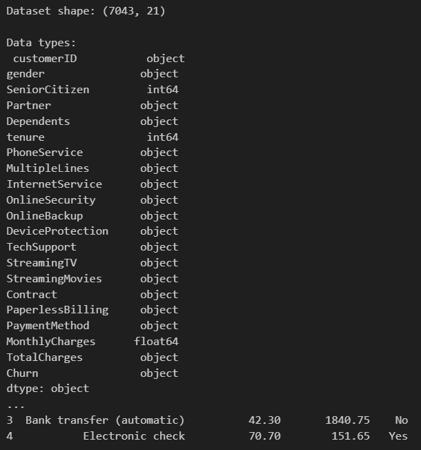
Key Insights from the Data Overview
-
Dataset Dimensions
-
The dataset contains 7,043 rows (customers) and 21 columns (features).
Insight: This is a medium-sized dataset, suitable for supervised learning models without the need for heavy big data tools.
2.2 Check for missing values
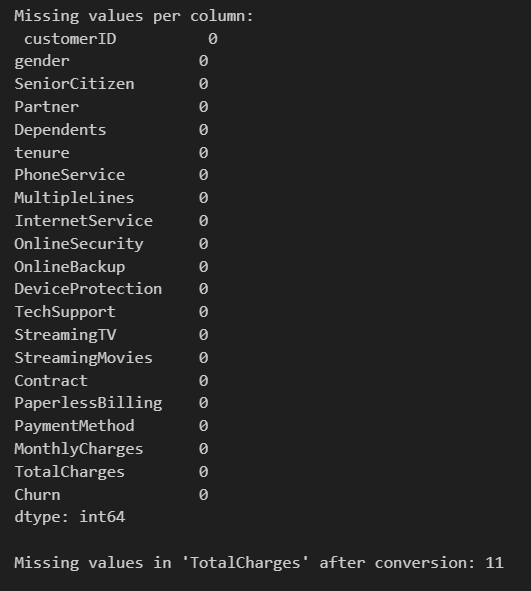
2.3 Descriptive statistics
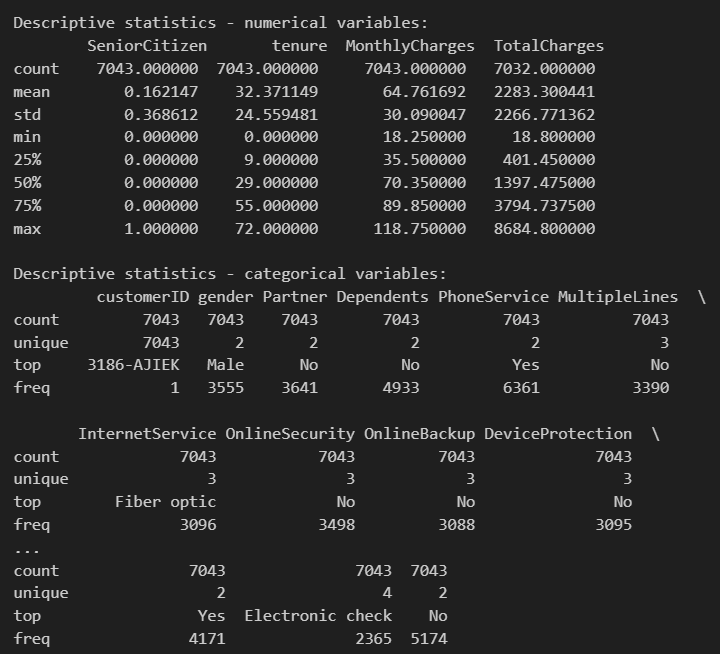
2.4 Target variable distribution
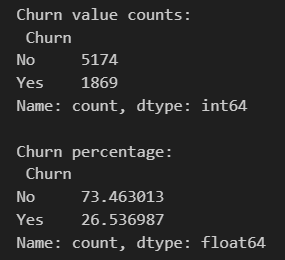
2.5 Churn distribution plot
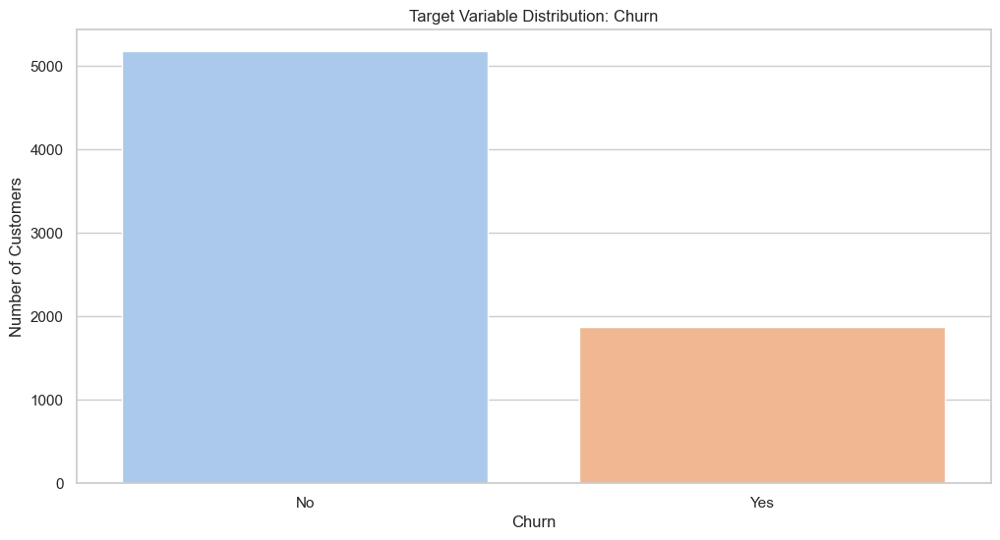
Key Insights from the Churn Distribution Plot
- Class imbalance is present
The bar chart clearly shows a strong imbalance between the two classes:
- The number of customers who did not churn (No) is significantly higher than those who did churn (Yes).
- Visually, churned customers represent roughly 25–27% of the dataset.
Insight: This is a class imbalance problem, and ignoring it during modeling could lead to biased models that predict mostly "No" and still achieve high accuracy.
2.6 Correlation heatmap (numerical)
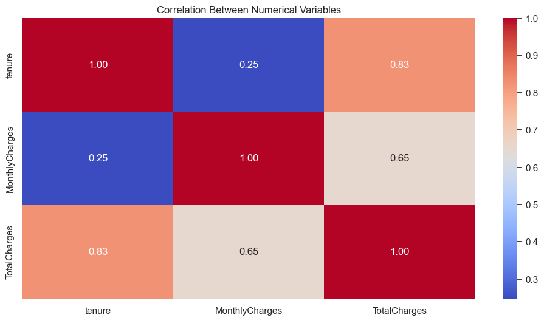
Key Insights from the Correlation Heatmap
- High correlation between TotalCharges and tenure
Correlation = 0.83
This is a strong positive correlation.
Insight:
- The longer a customer stays (tenure), the higher their total charges (TotalCharges).
- This makes sense since TotalCharges ≈ MonthlyCharges × tenure for most cases.
However, TotalCharges also depends on optional services, so it's not a perfect linear relation (not 1.00).
- Moderate correlation between TotalCharges and MonthlyCharges
Correlation = 0.65
Insight:
- Customers with higher monthly charges tend to accumulate higher total charges.
-
But this is not always the case, especially for short-tenure customers or those who churn early.
-
Weak correlation between tenure and MonthlyCharges
Correlation = 0.25
Insight:
- There is little relationship between how long a customer has been with the company and their monthly plan cost.
- This is useful: some long-term customers may still be on cheaper plans, and vice versa
2.7 Churn by Contract Type
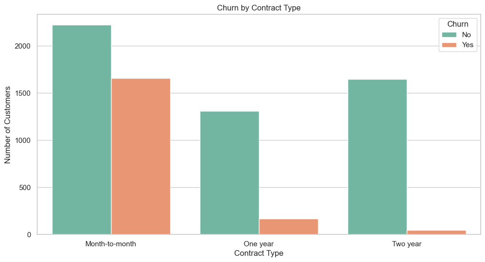
Key Insights from Churn by Contract Type
- Churn is highest among Month-to-month contracts
Customers with Month-to-month contracts have a much higher churn rate than those with long-term contracts.
The orange (Churn = Yes) portion is almost equal to the green (No) portion in that group.
Insight:
- Customers who are not locked into a contract are far more likely to leave.
-
This supports the business assumption that flexibility increases risk of churn.
-
Churn is lowest among Two-year contracts
Very few customers with a Two-year contract churned.
The green bar (retained customers) dominates.
Insight:
-
Longer contract commitments are strongly associated with customer retention.
-
One-year contracts show moderate churn
Churn exists but is much lower than for Month-to-month, and higher than for Two-year.
Insight:
- This group may represent a transitional customer profile — not as loyal as long-term clients, but more stable than those with no commitment.
2.8 Distribution of numerical variables segmented by Churn
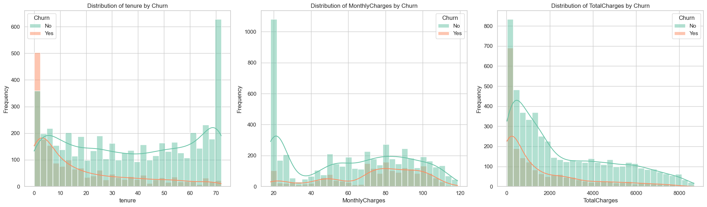
Insights from Numerical Variable Distributions by Churn
- tenure vs Churn
Most churned customers (Churn = Yes) have low tenure (especially ≤ 10 months).
Long-tenure customers (e.g., ≥ 50 months) have very low churn.
Insight:
-
Early churn is a critical risk. New customers are much more likely to leave within the first year.
-
MonthlyCharges vs Churn
Customers with higher monthly charges (≥ $70) churn more frequently.
Lower charges (~$20) are dominated by retained customers.
Insight:
-
High-value plans may increase churn risk if perceived value isn’t delivered.
-
TotalCharges vs Churn
Churned customers have lower TotalCharges, peaking below $2,000.
Customers with high TotalCharges (≥ $5,000) show low churn.
Insight:
- Churn tends to happen before significant revenue is accumulated — often early in the lifecycle.
2.9 Boxplots para detectar outliers por Churn
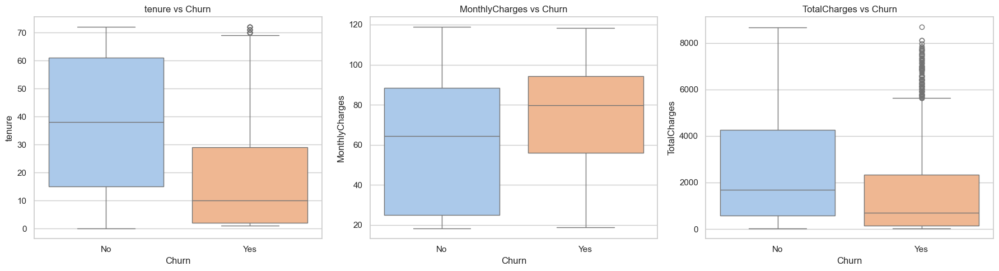
Key Insights from Boxplots: Numerical Features vs Churn
A) tenure vs Churn
Customers who churned (Yes) have a significantly lower median tenure than those who stayed.
The churn group has a tight IQR concentrated at low tenure values, with fewer long-tenure outliers.
Insight:
- Most churn happens early. Long-standing customers are less likely to leave.
B) MonthlyCharges vs Churn
The median MonthlyCharges is higher for churned customers.
The churn group has a tighter IQR skewed toward higher charges, indicating less price tolerance.
Insight:
- Customers paying more are more sensitive and more likely to churn, possibly due to unmet expectations.
C) TotalCharges vs Churn
Churned customers have much lower total charges overall, with many low outliers.
The retained customers (No) have a wider and higher IQR and more extreme high values.
Insight:
- Customers typically churn before becoming high-revenue clients.
2.10 Bar chart for categorical variables vs Churn
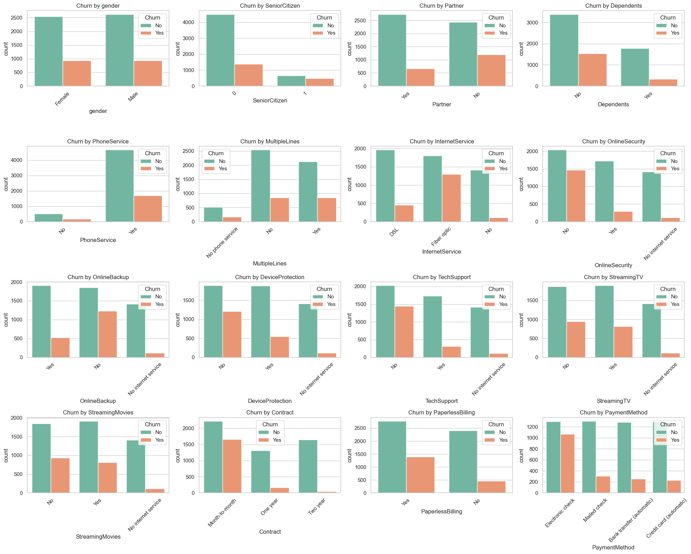
Insights on Bar chart for categorical variables vs Churn:
Contract Type is Crucial
- Month-to-month contracts have a much higher churn rate compared to One year and Two year contracts.
- Longer-term contracts help in customer retention.
Internet Service
- Customers using fiber optic internet show higher churn than those using DSL or having no internet service.
OnlineSecurity, OnlineBackup, DeviceProtection, TechSupport
- Customers without these add-on services are more likely to churn.
- Having these services appears to reduce churn risk, possibly due to increased engagement or satisfaction.
Streaming Services
- Customers with StreamingTV or StreamingMovies show slightly higher churn, but the impact is less pronounced than technical services like security or backup.
Senior Citizens
- Although they represent a smaller group, senior citizens tend to churn more frequently than younger users.
Dependents and Partners
- Customers without dependents or partners tend to churn more, suggesting that households with families may be more stable subscribers.
Phone Service and Multiple Lines
- No major difference in churn between those with or without PhoneService.
- Having multiple lines does not show a strong correlation with churn.
Paperless Billing
- Customers using paperless billing have a higher churn rate, possibly linked to more tech-savvy, deal-hunting behavior.
Payment Method
- Electronic check users have a notably higher churn rate than those using automatic payments (like credit cards or bank transfers).
- Suggests that automatic payment methods help retain customers.
Gender
- No significant difference in churn between males and females – gender is not a key driver of churn.
2.11 Cross-tabulation + churn percentage by category
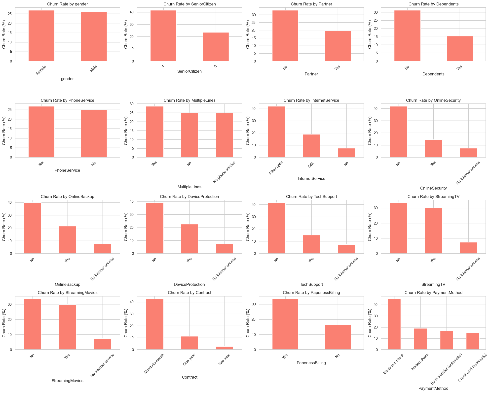
Insights on Cross-tabulation + churn percentage by category
Contract Type:
- Month-to-month contracts have by far the highest churn rate, over 40%.
- One year and especially Two year contracts show much lower churn, confirming the loyalty associated with longer commitments.
Internet Service:
- Customers using Fiber optic internet have the highest churn rate among all internet service types.
- Customers with no internet service are much less likely to churn.
Online Services (OnlineSecurity, OnlineBackup, DeviceProtection, TechSupport):
- Customers who lack these services have substantially higher churn rates.
- Those who use these features are more loyal, suggesting these services contribute to customer retention.
Paperless Billing:
- Customers with Paperless Billing enabled show a higher churn rate than those who don’t use it. This could be linked to tech-savviness or reduced personal connection.
Senior Citizens:
- Senior citizens show a higher churn rate than younger customers.
Dependents & Partner:
- Customers with no dependents or no partner churn more frequently, which may indicate a single-person household is more price-sensitive or less loyal.
Payment Method:
- Electronic check users churn much more than those who use other payment methods (like credit card or bank transfer). Possibly due to financial instability or payment flexibility.
StreamingTV and StreamingMovies:
- Interestingly, whether or not the customer subscribes to streaming services does not greatly affect churn. The churn rate remains relatively balanced between “Yes” and “No”.
Multiple Lines:
- Having multiple phone lines slightly correlates with higher churn, though the difference is not drastic.
Gender:
- No significant difference in churn rate between Male and Female customers — gender is not a predictive churn feature.
2.12 Churn analysis by customer tenure
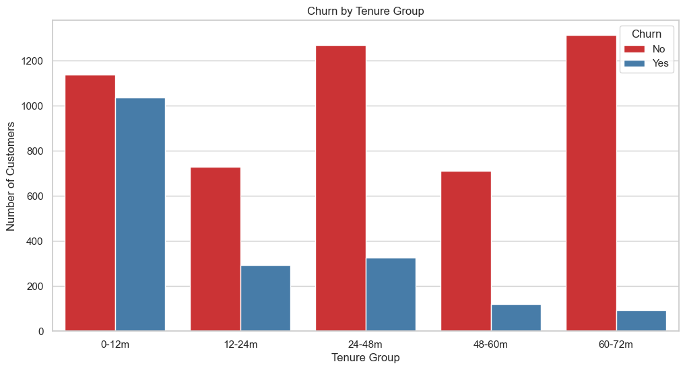
Key Insights from Churn by Tenure Group
A) Churn is highest in the first 12 months (0–12m)
The 0–12m group has the highest absolute number of churns.
Nearly equal bars for Churn = Yes and No, indicating high churn rate.
Insight:
- New customers are at the highest risk of churn — the first year is critical.
B) Churn decreases with customer longevity
Churn counts drop significantly for customers in the 48–60m and 60–72m ranges.
These long-tenure groups are dominated by non-churners.
Insight:
- Customers who remain longer tend to be satisfied and loyal.
C) Unusual churn spike in 24–48m group
A noticeable rise in churn count appears in 24–48m, despite customers being mid-tenure.
Churn > retention in this group.
Insight:
- Mid-term customers may hit a satisfaction plateau or contract renewal point that triggers churn.
2.13 Pairplot (multivariate exploration)
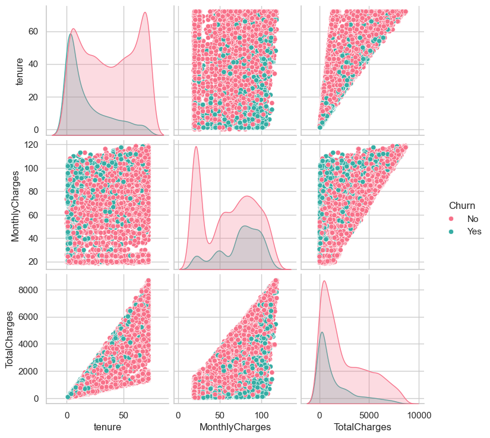
Key Insights from Pairplot Analysis
A) Churn is highly concentrated among low-tenure customers
In the tenure vs other features plots, churned customers (Churn = Yes, in teal) cluster heavily at low tenure values (closer to 0).
Customers who stayed (Churn = No, in pink) are more widely spread across the entire tenure range.
Insight:
- Most churn occurs early in the customer lifecycle, confirming previous insights from histograms and boxplots.
B) Clear diagonal trend between tenure and TotalCharges
There’s a strong linear relationship between tenure and TotalCharges for both churn and non-churn groups.
However, customers who churned are clustered toward the lower-left corner (short tenure, low total charges).
Insight:
- Customers who churn don’t accumulate high value over time — they leave early before generating significant revenue.
C) Churn appears across all ranges of MonthlyCharges
Churned customers exist across all levels of monthly charges, though they’re more dense in the mid-to-high range (≈ $70–$100).
Retained customers dominate the low-cost segments.
Insight:
- While MonthlyCharges alone isn’t a strong separator, high-value plans still carry slightly more churn risk.
D) Distribution on diagonals (KDE plots)
The diagonal KDE plots show churned users with:
A sharp peak at low tenure
A broader and slightly higher range of MonthlyCharges
A right-skewed TotalCharges distribution mostly below 2,000
Insight:
- All three numerical variables have non-normal distributions, with churners clustering at the lower end of tenure and total value.
Key Insights from Churn Analysis (CRISP-DM: Data Understanding Phase)
2.1. Customer Tenure & Churn Behavior
- Short-tenure customers (0–12 months) have the highest churn rate.
- Long-tenure customers (48+ months) rarely churn, indicating customer loyalty increases over time.
- The boxplot confirms that churned customers typically have much shorter tenures.
2.2. Monthly and Total Charges
- MonthlyCharges are slightly higher for churned customers.
- TotalCharges are significantly lower among churned customers, which correlates with short tenure.
- Histograms and KDE plots reveal a clear density difference between churned and retained customers, especially in TotalCharges.
2.3. Tenure Groups
- When grouping customers by tenure ranges (e.g., 0–12m, 12–24m, etc.):
- The 0–12m group has the largest number of churners.
- The 60–72m group has nearly no churners, showing strong customer retention among long-term users.
2.4. Pairplot Correlation
- The strongest linear relationship is between Tenure and TotalCharges.
- Churned customers are clustered toward the lower-left corner, reflecting low tenure and low total charges.
- This supports the hypothesis that early-stage customers are at highest churn risk.
2.5. Categorical Variables (Countplots & Churn Rates)
Contract Type:
- Month-to-month contracts show the highest churn (~45%).
- Two-year contracts show very low churn (<10%).
Internet Service:
- Fiber optic users churn more frequently.
- Customers with no internet service rarely churn.
Online Services:
- Lack of OnlineSecurity, Backup, DeviceProtection, or TechSupport is strongly associated with churn.
Billing Preferences:
- Paperless Billing users churn more often.
- Electronic check is the payment method with the highest churn rate.
Demographics:
- Senior citizens, single customers (no partner), and those without dependents are more likely to churn.
- Gender has no significant effect on churn.